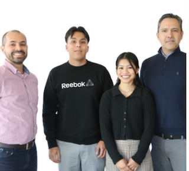

Team
Our team consists of Cal Poly Professors, Students, and even Cuesta College Students hoping to transfer to Cal Poly!
-

Alberto Lara Cornejo, "The Legend" Alberto is a new transfer student at Cal Poly whos major is Computer Science with a concentration in AI. He is a jack of all trades with many skills that are shown through his projects he builds. Some of these include building an electric motorcycle working on older cars and motorcycles, building a 3d printer and computers. He has so many hobbies that he forgets what they are, and he's always got at least 3 projects going at the same time. He's looking forward to his career as a computer scientist, and looking forward to many new projects.
-
“My name is Israel Aguiniga. A aspiring computer science student at Cuesta College. I believe technology has the potential to change the world and I wanna be part of it. “
-
Phillip Niakoulov is a man of mystery. Not much is known about him but what we do know is that he is an Cal Poly student capable of many things in security software. I imagine he will have a bright future as a security systems engineer or consultant.
Phillip Niakoulov -
Joseph Perez Joseph Perez is fourth-year Cal Poly Computer science major that is about to graduate. He has been working through the BEACoN Research Program with several research projects including a groundwater assessment in Paso Robles and the Cal Poly Hanoi Project.
-
Angelika Tumamak Canete Angelika Tumamak Canete is a third-year Computer Science major from Long Beach, California, attending Cal Poly. Inspired by her high school robotics team, she chose computer science for its problem-solving aspects. Her favorite spot in San Luis Obispo County is the Bob Jones Trail in Avila. She enjoys spending time in the computer science lab and the Multicultural Center on campus. Her hobbies include reading, playing guitar, and recording pop and soul covers. Her favorite class has been Data Structures, and her dream job involves working with social robots. She supports justice, equity, diversity, and inclusion through the BEACoN Research Program and is actively involved in the Pilipino Cultural Exchange.
-
Dr.Javier Gonzalez-Sanchez "I am an assistant professor in the Computer Science and Software Engineering department at California State University –San Luis Obispo. I earned a Ph.D. in Computer Science from Arizona State University, an M.S. in Electrical Engineering with a Computer Science major from the Center for Research and Advanced Studies (CINVESTAV) of the Mexican National Polytechnic Institute, and a B.S. in Computer Engineering from the Universidad de Guadalajara."
More about me -
Dr.Rafael Guerra Silva Dr.Rafael Guerra Silva joined the Industrial Technology and Packaging Area in the Orfalea College of Business in September 2022 as an Assistant Professor, following nearly four years at the Pontificia Universidad Católica de Valparaíso, and five years in Universidad Central de Venezuela. He has published various research papers in peer reviewed journals in additive manufacturing, metal machining, and the application of numerical modeling and computational intelligence in engineering. He also has experience as an industry consultant, working for companies in the food and beverages, packaging and mining sectors
-

The Gang